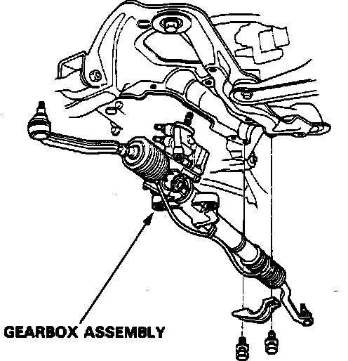

Removal and Installation
1. Disconnect steering gear reservoir return hose and place end in suitable container.2. Start engine and allow to idle, turn steering wheel from lock to lock several times, when fluid stops running out of hose, stop engine.
3. Disable coded theft protection system as described under Vehicle Damage Warnings.
4. Disarm airbag system as described under Technician Safety Information.
5. Position wheels straight ahead, then raise and support front of vehicle.
6. Remove front wheels.
7. Remove tie rod nut cotter pin and nut.
8. Remove ball joint using suitable tool.
9. Loosen steering joint bolt. Do not remove bolt.
10. Remove sensor fluid line nut, then position tape over opening to prevent foreign materials from entering.
11. Remove feed pipe joint from control unit.
12. Disconnect control unit lines.
13. Remove underbody splash guard attaching bolts, then remove.
14. Remove sensor 8 mm line from steering gear.
15. Position suitable jack stand below steering gear unit.
16. Separate gear pinion shaft and column shaft by removing steering joint bolt.
Fig. 31 Steering Gear Replacement:

17. Remove steering gear attaching bolts, then remove assembly, Fig. 31.
18. Reverse procedure to install.
19. Restore coded theft protection system as outlined under Vehicle Damage Warnings.
20. Rearm airbag system as outlined under Technician Safety Information.